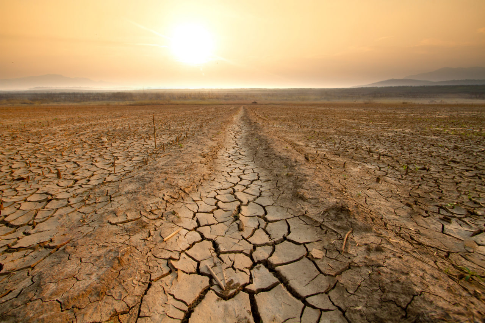

"2026-yil fevralidagi tahlillarga ko‘ra, sug‘orish tizimlarining eskirganligi sababli suvning katta qismi dalaga yetib bormasdan bug‘lanib yoki yerga singib ketmoqda."
2028-yilga borib suv tanqisligi yiliga 5-12 kub kilometrga yetishi prognoz qilinmoqda.
O‘zbekistonda 2026-yilga kelib suv resurslari bilan bog‘liq vaziyat nafaqat ekologik, balki strategik xavfsizlik masalasiga aylandi. Bugungi kunda sug‘orish tizimlarining qariyb 70-80 foizi ma’nan va jismonan eskirgan bo‘lib, bu tizimlar asosan o‘tgan asrning o‘rtalarida, beton qoplamasiz yoki oddiy tuproq o‘zanli kanallar ko‘rinishida barpo etilgan. Ushbu infratuzilmadagi nosozliklar tufayli daryolardan olinayotgan suvning qariyb 35-40 foizi hali dalaga yetib bormasdanoq filtratsiya (yerga singish) va kuchli bug‘lanish natijasida yo‘qotilmoqda. Mazkur holatni yanada og‘irlashtirayotgan omil — iqlim isishining jadallashuvi bo‘lib, u tog‘lardagi muzliklarning erish maydonini qisqartirib yubordi, bu esa daryolardagi tabiiy suv oqimining kamayishiga to‘g‘ridan-to‘g‘ri ta’sir ko‘rsatmoqda.

Hozirgi hisob-kitoblar shuni ko‘rsatadiki, agar suvni tejash texnologiyalari va kanallarni betonlashtirish ishlari favqulodda tezlashtirilmasa, 2028-yilga borib yuzaga keladigan 5-12 kub kilometrlik defitsit qishloq xo‘jaligi hosildorligining keskin pasayishiga va oziq-ovqat xavfsizligiga xavf tug‘dirishi muqarrar. Bu taqchillik nafaqat ichki resurslarga, balki transchegaraviy daryolar oqimining kamayishiga ham bog‘liq bo‘lib, mintaqaviy suv taqsimoti masalasini yanada murakkablashtirmoqda. 2026-yilda ushbu muammoning markazida turgan asosiy masala shundaki, an’anaviy sug‘orish usullari endi o‘zini oqlamayapti; tuproqning sho‘rlanishi va suvning isrof bo‘lishi zanjirli reaksiyani yuzaga keltirmoqda, ya’ni ko‘p suv sarflangani sari yerning unumdorligi pasayib, ko‘proq suv talab qiladigan holatga kelib qolmoqda. Shu sababli, davlat darajasida suvni tejaydigan texnologiyalarga o‘tish va sug‘orish tarmoqlarini modernizatsiya qilish eng ustuvor vazifa sifatida ko‘rilmoqda, zero yo‘qotilayotgan har bir tomchi suv kelajakdagi qurg‘oqchilik xavfini yaqinlashtirmoqda.